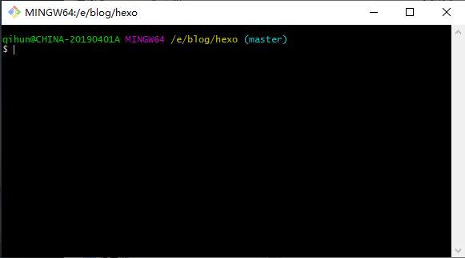
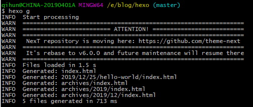
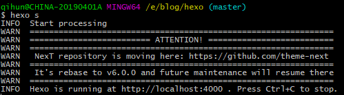
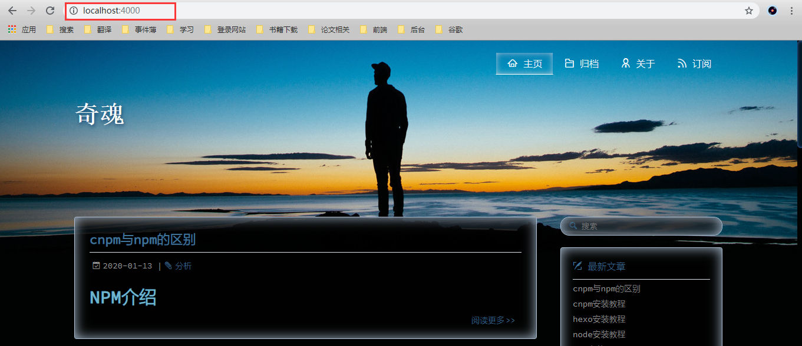
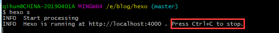
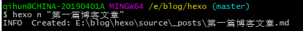

博客搭建
博客准备
搭建博客，前期需要四个工具
GitHub:国内一款面向开发者的云端开发平台，提供代码托管，运行空间，质量控制，项目管理等功能
Git:一款免费、开源的分布式版本控制系统 git安装教程
Node.js:建立在Chrome上的JavaScript运行引擎 node安装教程
Hexo:Hexo快速、简洁且高效的博客框架 hexo安装教程
初始化
方法一：新建文件夹（在E盘中创建blog文件夹，在blog文件夹下创建hexo文件夹），初始化项目
1
hexo init
方法二： 初始化并创建文件夹
1
hexo init E:/blog/hexo

若主题下载失败
在E:/blog中的hexo文件夹上右键选择Git Bash Here

1) 先执行
1 | cnpm install |
2) 再下载主题
1 | git clone https://github.com/hexojs/hexo-theme-landscape themes/landscape |
生成静态页面
1 | hexo generate //可以简写成 hexo g |

启动服务器
1 | hexo server //可以简写成 hexo s |

查看本地博客
然后打开浏览器，输入 localhost:4000 就可以浏览我们的博客了。

ctrl+c退出

新建文章
1 | hexo new “xxxx” 或 hexo n “xxxx” |

在hexo\source_posts文件夹下，可以找到新建的文章，可用笔记本编辑器编辑文章内容。
1 | #再次启动服务器，清除、编辑、启动 |

原文作者: 奇魂
原文链接: http://yoursite.com/Hexo/搭建Hexo博客/
版权声明: 转载请注明出处(必须保留作者署名及链接)